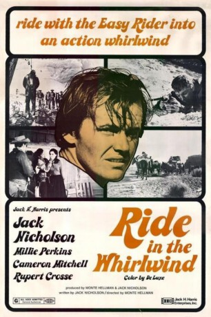
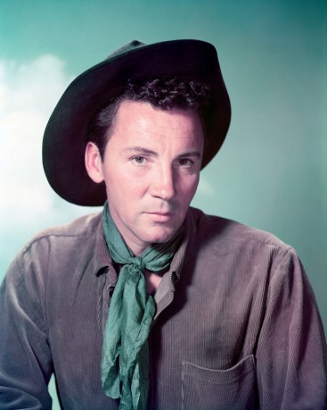
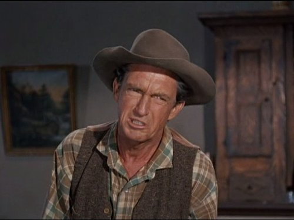

#2769 Ritt im Wirbelwind
Alternativ: Ride in the Whirlwind
 
 IMDB-Wertung: 6.5 / 10
IMDB-Wertung: 6.5 / 10  Metascore: 0
Metascore: 0 
Die Cowboys Wes, Vern und Indian Joe sind auf dem Weg zu einem Viehtrieb und finden unterwegs Unterkunft in einer Hütte. Es stellt sich heraus, dass die Hütte bewohnt ist. Ihre Gastgeber haben eine Postkutsche überfallen und den Kutscher ermordet. Seitdem werden die Banditen von einem Trupp Gesetzeshüter verfolgt. Als die Hütte von dem Trupp angegriffen wird, können Wes und Vern fliehen. In der falschen Annahme, dass die beiden zu den Banditen gehören, nimmt der Trupp unerbittlich die Verfolgung auf …
Jahr: 1966
Dauer: 82 Minuten
FSK:
Land: USA Studio: Continental DistributingTonspuren: DD2.0 - ,
Untertitel:
Auflösung: 1080p (1920x1040) Größe: 6717 MB
Genre: Western
Regisseur: Monte Hellman
Drehbuch: Jack Nicholson
Soundtrack: Robert Drasnin
Darsteller:
-  Cameron Mitchell als Vern
- Millie Perkins als Abigail
 Jack Nicholson als Wes
Jack Nicholson als Wes Harry Dean Stanton als Blind Dick
Harry Dean Stanton als Blind Dick- Gary Kent als
- Katherine Squire als Catherine
-  George Mitchell als Evan
- Rupert Crosse als Indian Joe
- John Hackett als Winslow
- Tom Filer als Otis
- B.J. Merholz als Edgar
- Brandon Carroll als Quint Mapes
- Peter Cannon als Hagerman
- William A. Keller als Roy
- Neil Summers als
- James Campbell als
- Walter Phelps als
- Charles Eastman als Drummer
Datei: X:\HD-Western-1960-1979\Ritt im Wirbelwind (1966, FSK, 1920x1040).mkv seit 14.12.2015
Festplatte: HD Eastern+Western
 Es gibt insgesamt 110 Filme in der Gruppe 'HD-Western-1960-1979'
Es gibt insgesamt 110 Filme in der Gruppe 'HD-Western-1960-1979'